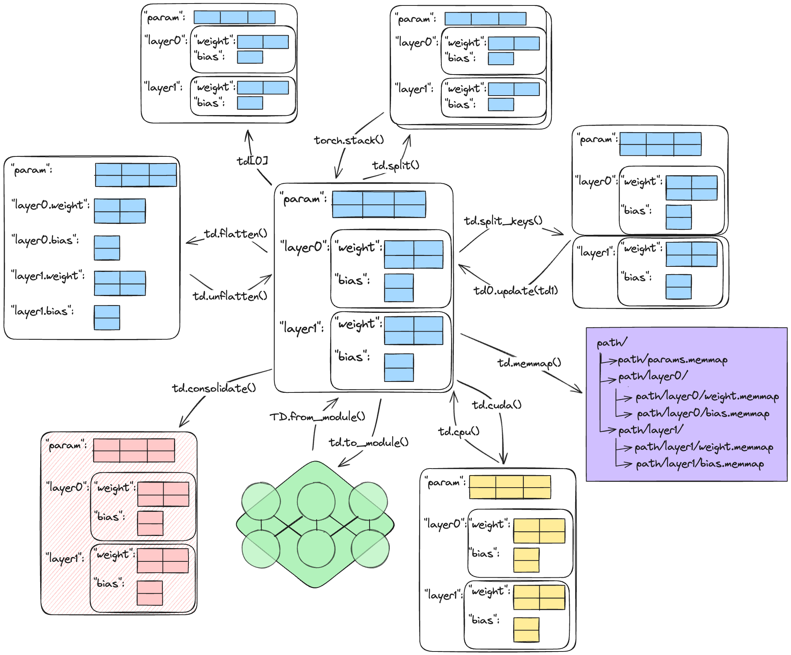

Getting started#
This tour takes about one hour. It starts with your first
TensorDict and ends with saving it and passing it to a
model. Each section links to the user guide page that gives the details.
All the examples run on a CPU. Run them in order in one Python session, because later examples use names that earlier ones define. If tensordict is not installed yet, read Installation first.


Common operations on one nested TensorDict. The two arrows on
the left, labeled td.flatten() and td.unflatten(), are
flatten_keys() and
unflatten_keys().#
Create a TensorDict#
A TensorDict is a dictionary of tensors. Give it the
entries as a dict. TensorDict converts NumPy arrays and int, float,
and bool values to torch.Tensor:
>>> import torch
>>> from tensordict import TensorDict
>>> td = TensorDict({"a": 0, "b": torch.ones(3)})
>>> td
TensorDict(
fields={
a: Tensor(shape=torch.Size([]), device=cpu, dtype=torch.int64, is_shared=False),
b: Tensor(shape=torch.Size([3]), device=cpu, dtype=torch.float32, is_shared=False)},
batch_size=torch.Size([]),
device=None,
is_shared=False)
>>> td["a"]
tensor(0)
A TensorDict has the methods of a Python dict: keys, values,
items, get, update, pop, setdefault, and others. Keys are
strings, or tuples of strings for nested entries.
select() keeps some entries and
exclude() removes them. Both return a new
TensorDict:
>>> td["c"] = torch.zeros(2)
>>> sorted(td.keys())
['a', 'b', 'c']
>>> sorted(td.exclude("b").keys())
['a', 'c']
>>> td.select("a", "c")["c"]
tensor([0., 0.])
Batch size and batch dimensions#
Every TensorDict has a batch size, batch_size: the leading dimensions that
all its tensors share. These dimensions are the batch dimensions. The tensors
of a TensorDict are its leaves. A leaf can have more dimensions after the
batch dimensions, and the leaves can have different dtypes. This TensorDict
holds 4 time steps of 3 sensors, with 5 channels for each reading:
>>> data = TensorDict(
... {
... "reading": torch.ones(3, 4, 5),
... "valid": torch.zeros(3, 4, dtype=torch.bool),
... },
... batch_size=[3, 4],
... )
>>> data.batch_size
torch.Size([3, 4])
>>> data.shape
torch.Size([3, 4])
shape is another name for batch_size. The first dimensions of each
tensor that you write must be equal to batch_size. If they are not,
TensorDict raises a RuntimeError:
>>> data["offset"] = torch.zeros(2)
Traceback (most recent call last):
...
RuntimeError: batch dimension mismatch, got self.batch_size=torch.Size([3, 4]) and value.shape=torch.Size([2]) for key 'offset'. The leading dimensions of a value must match the batch size.
If you do not give batch_size, it is torch.Size([]): the TensorDict has
no batch dimensions. TensorDict does not infer the batch size from the
tensors. To infer it, use from_dict() with
auto_batch_size=True, or call
auto_batch_size_(). Both set the batch size to
the leading dimensions that all the leaves share:
>>> TensorDict({"reading": torch.ones(3, 4, 5)}).batch_size
torch.Size([])
>>> TensorDict.from_dict(
... {"reading": torch.ones(3, 4, 5), "valid": torch.zeros(3, 4)},
... auto_batch_size=True,
... ).batch_size
torch.Size([3, 4])
A TensorDict acts like a tensor, so some dict operations act on the batch
dimensions and not on the keys:
for x in datagives the sub-TensorDicts along the first batch dimension, like a loop over a tensor. To iterate over the keys, usedata.keys().len(data)is the size of the first batch dimension,data.batch_size[0].data[0]indexes the batch. An integer is never a key.bool(data)raises aRuntimeError. To test for entries, usedata.is_empty()."reading" in datatests the keys, as for adict.
For the data of this section:
>>> len(data)
3
>>> [x.batch_size for x in data][0]
torch.Size([4])
>>> "reading" in data
True
Batch size, shapes, and indexing explains the batch size in detail.
Indexing and shape operations#
Indexing, slicing, and shape operations apply to the batch dimensions. They return a new TensorDict, with the same operation applied to every leaf:
>>> sub = data[..., :2]
>>> sub.batch_size
torch.Size([3, 2])
>>> sub["reading"].shape
torch.Size([3, 2, 5])
>>> data[0, 1]["reading"].shape
torch.Size([5])
>>> data.reshape(-1).batch_size
torch.Size([12])
>>> data.unsqueeze(-1).batch_size
torch.Size([3, 4, 1])
>>> data.permute(1, 0)["reading"].shape
torch.Size([4, 3, 5])
A boolean mask over the batch dimensions selects elements, as for a tensor:
>>> mask = torch.tensor([True, False, True])
>>> data[mask].batch_size
torch.Size([2, 4])
To write into a part of a TensorDict, index it on the left of =:
>>> data[0] = TensorDict(
... {
... "reading": torch.zeros(4, 5),
... "valid": torch.ones(4, dtype=torch.bool),
... },
... batch_size=[4],
... )
>>> data["valid"][0]
tensor([True, True, True, True])
Batch size, shapes, and indexing covers indexing and the shape operations.
TensorClass: the class form#
TensorClass is the class form of a TensorDict. You
declare the fields as class annotations, like a dataclass, and you add your
own methods. A TensorClass has the tensor behavior of a TensorDict: the batch
size, indexing, shape operations, and the batch-size check. This class holds a
batch of images and their labels:
>>> from tensordict import TensorClass
>>> class Batch(TensorClass):
... image: torch.Tensor
... label: torch.Tensor
...
... def select_label(self, label):
... return self[self.label == label]
>>> _ = torch.manual_seed(0)
>>> images = Batch(
... image=torch.randn(6, 3, 8, 8),
... label=torch.tensor([0, 1, 0, 2, 1, 0]),
... batch_size=[6],
... )
>>> images.select_label(0).batch_size
torch.Size([3])
>>> type(images[0]).__name__
'Batch'
>>> images.reshape(2, 3).image.shape
torch.Size([2, 3, 3, 8, 8])
Use a TensorDict when you do not know the keys in advance, and a TensorClass for a fixed set of fields. Three other containers have the same operations:
TypedTensorDicthas typed fields on aTensorDictBase, withtd["key"]access and class inheritance to add fields. TypedTensorDict explains it.LazyStackedTensorDictholds elements of different shapes.lazy_stack()makes one, as the stacking section below shows.PersistentTensorDictreads its data from an HDF5 or Zarr file on disk.
TensorClass explains TensorClass, and Which container should I use? compares the containers.
Nested TensorDicts and tuple keys#
A TensorDict can contain other TensorDicts. A dict value becomes a nested
TensorDict with the batch size of its parent. To read or write a nested entry,
use a tuple of keys. In reinforcement learning, for example, a nested
"next" entry holds the data of the next step:
>>> data = TensorDict(
... {
... "obs": torch.ones(3, 4),
... "next": {"obs": torch.zeros(3, 4)},
... },
... batch_size=[3],
... )
>>> data["next"].batch_size
torch.Size([3])
>>> data["next", "obs"].shape
torch.Size([3, 4])
>>> data["next", "reward"] = torch.ones(3)
>>> list(data.keys(include_nested=True, leaves_only=True))
['obs', ('next', 'obs'), ('next', 'reward')]
The batch_size of a nested TensorDict must start with the batch_size
of its parent, and it can have more dimensions. For example, a child with
batch_size=[3, 4] fits in a parent with batch_size=[3].
flatten_keys() changes a nested TensorDict to one
level, with the keys joined by a separator.
unflatten_keys() changes it back:
>>> flat = data.flatten_keys(".")
>>> sorted(flat.keys())
['next.obs', 'next.reward', 'obs']
>>> sorted(flat.unflatten_keys(".").keys())
['next', 'obs']
Keys, nested keys, and locking explains nested keys and the methods that select and flatten them.
Devices, dtypes, and arithmetic#
to() moves or casts every leaf with one call. A
dtype casts every leaf, the integer and boolean ones too. If you set
device when you create a TensorDict, TensorDict moves each tensor that
you write to that device:
>>> device = "cuda" if torch.cuda.is_available() else "cpu"
>>> data = TensorDict({"pos": torch.ones(3, 4), "step": torch.arange(3)}, batch_size=[3])
>>> data.to(device)["pos"].device.type == device
True
>>> data.to(torch.float64)["step"].dtype
torch.float64
>>> on_device = TensorDict(batch_size=[3], device=device)
>>> on_device["pos"] = torch.ones(3, 4)
>>> on_device["pos"].device.type == device
True
Arithmetic and most pointwise functions apply to every leaf. Between two TensorDicts, they apply to the leaves with the same key:
>>> (data * 2)["pos"][0]
tensor([2., 2., 2., 2.])
>>> (data + data)["step"]
tensor([0, 2, 4])
>>> data.abs()["pos"].shape
torch.Size([3, 4])
If TensorDict has no method for an operation, use
apply(). It calls a function on each leaf and
returns a new TensorDict. apply_ writes the results into the same
TensorDict:
>>> data.apply(lambda x: x.float().mean(-1) if x.ndim > 1 else x)["pos"]
tensor([1., 1., 1.])
Devices, dtypes, and memory explains devices, dtypes, and non_blocking copies.
Arithmetic, apply, reductions, and gradients lists the arithmetic, reductions, and apply.
Stacking and concatenation#
torch.stack() and torch.cat() accept a list of TensorDicts. They
stack or concatenate each leaf, and add or extend a batch dimension:
>>> samples = [
... TensorDict({"features": torch.ones(4), "target": torch.zeros(())}, batch_size=[])
... for _ in range(3)
... ]
>>> batch = torch.stack(samples)
>>> batch.batch_size
torch.Size([3])
>>> batch["features"].shape
torch.Size([3, 4])
>>> torch.cat([batch, batch]).batch_size
torch.Size([6])
torch.stack() needs leaves with the same shape. For data of different
sizes, such as sentences or DNA reads of different lengths, use
lazy_stack(). It keeps the TensorDicts as a list, in a
LazyStackedTensorDict, and stacks a leaf only when you
read it. To read a leaf with different shapes, ask for a list or a padded
tensor:
>>> from tensordict import lazy_stack
>>> ragged = lazy_stack([TensorDict({"tokens": torch.arange(n)}) for n in (2, 5)])
>>> ragged.batch_size
torch.Size([2])
>>> ragged[1]["tokens"].shape
torch.Size([5])
>>> [x.shape for x in ragged.get("tokens", as_list=True)]
[torch.Size([2]), torch.Size([5])]
>>> ragged.get("tokens", as_padded_tensor=True).shape
torch.Size([2, 5])
Stacking and variable-size data explains lazy stacks and the other ways to store data of different sizes.
Non-tensor data#
A TensorDict can also hold values that are not tensors, such as strings. Reading one returns the value:
>>> data = TensorDict({"weight": torch.ones(3)}, batch_size=[3])
>>> data["label"] = "cat"
>>> data["label"]
'cat'
TensorDict stores one value for the whole batch. Every element has that value, so indexing keeps it:
>>> data[0]["label"]
'cat'
When you stack TensorDicts, the non-tensor values become a list:
>>> pets = torch.stack([TensorDict({"label": "cat"}), TensorDict({"label": "dog"})])
>>> list(pets["label"])
['cat', 'dog']
Non-tensor data and unbatched entries explains how TensorDict stores these values, and how they behave under indexing and stacking.
Save and load#
memmap() writes a TensorDict to a directory, with
one file for each leaf, and returns a memory-mapped copy.
load_memmap() maps the files back into memory. It
reads the data from disk only when you use it.
save() and load()
are other names for the same two methods:
>>> import tempfile
>>> tmpdir = tempfile.TemporaryDirectory()
>>> data = TensorDict(
... {
... "pos": torch.arange(6).reshape(3, 2),
... "meta": TensorDict({"scale": torch.zeros(3, 2)}, batch_size=[3]),
... },
... batch_size=[3],
... )
>>> _ = data.memmap(tmpdir.name)
>>> loaded = TensorDict.load_memmap(tmpdir.name)
>>> loaded.batch_size
torch.Size([3])
>>> loaded["pos"][1]
MemoryMappedTensor([2, 3])
>>> loaded["meta", "scale"].shape
torch.Size([3, 2])
>>> tmpdir.cleanup()
Tensors are stored without pickle. Non-tensor values that JSON cannot store
are stored with pickle, and load_memmap loads them only if you allow it
with allow_pickle. consolidate() copies all
the leaves into one storage. A device move or an inter-process transfer of
the result then copies one buffer.
Save and load tensordicts compares memmap, torch.save(), and state_dict.
Large datasets and storage backends covers datasets that do not fit in memory.
Locking#
lock_() locks a TensorDict. A locked TensorDict
does not accept new keys, and you cannot delete or replace an entry. You can
still write new values into the existing tensors with
set_() and update_().
These methods copy the values into the same storage, or replace the value of
a non-tensor entry:
>>> data = TensorDict({"pos": torch.zeros(3)}, batch_size=[3]).lock_()
>>> data["vel"] = torch.ones(3)
Traceback (most recent call last):
...
RuntimeError: Cannot modify locked TensorDict. For in-place modification, consider using the `set_()` method and make sure the key is present.
>>> _ = data.set_("pos", torch.ones(3))
>>> data["pos"]
tensor([1., 1., 1.])
memmap and consolidate return a locked TensorDict.
unlock_() unlocks it. To unlock a TensorDict for
some lines only, use unlock_ as a context manager:
>>> with data.unlock_():
... data["vel"] = torch.ones(3)
>>> data.is_locked
True
Keys, nested keys, and locking explains locking and the other context managers. In-place operations explains which methods write into the same storage.
TensorDict and modules#
from_module() puts the parameters and buffers of
a torch.nn.Module in a TensorDict, with the structure of the module.
to_module() puts them back. As a context
manager, to_module sets other values for some lines only, and then
restores the original parameters:
>>> from torch import nn
>>> model = nn.Sequential(nn.Linear(3, 4), nn.Linear(4, 2))
>>> params = TensorDict.from_module(model)
>>> params["0", "weight"].shape
torch.Size([4, 3])
>>> zeros = params.detach().clone().zero_()
>>> with zeros.to_module(model):
... out = model(torch.ones(3))
>>> out
tensor([0., 0.], grad_fn=<ViewBackward0>)
Each leaf has its own file, so you can save the parameters with memmap
and load the parameters of one submodule only, from its subdirectory. To
load memory-mapped parameters into a model, pass inplace=True.
to_module then copies the values into the parameters of the model:
>>> tmpdir = tempfile.TemporaryDirectory()
>>> _ = params.memmap(tmpdir.name)
>>> _ = TensorDict.load_memmap(tmpdir.name).to_module(model, inplace=True)
>>> _ = TensorDict.load_memmap(f"{tmpdir.name}/0").to_module(model[0], inplace=True)
>>> tmpdir.cleanup()
Without inplace=True, the parameters of the model use the memory-mapped
files as their storage. A change to a parameter, for example an optimizer
step, can then change the files (Save and load tensordicts explains when).
TensorDictModule wraps a module so that it reads its
inputs from a TensorDict and writes its outputs into the same TensorDict.
in_keys and out_keys name the entries.
TensorDictSequential chains such modules:
>>> from tensordict.nn import TensorDictModule, TensorDictSequential
>>> net = TensorDictSequential(
... TensorDictModule(nn.Linear(3, 8), in_keys=["features"], out_keys=["hidden"]),
... TensorDictModule(nn.Linear(8, 2), in_keys=["hidden"], out_keys=["logits"]),
... )
>>> batch = TensorDict({"features": torch.randn(4, 3)}, batch_size=[4])
>>> _ = net(batch)
>>> batch["logits"].shape
torch.Size([4, 2])
The model and the loss read and write the same TensorDict, so one training
loop works for data with different keys. Modules: TensorDictModule and tensordict.nn explains
tensordict.nn. torch.compile, torch.func, torch.export, and CUDA graphs covers torch.compile and
torch.vmap with parameter TensorDicts.
Next steps#
The user guide explains each idea of this page in detail. Start with What is TensorDict?.
The tutorials are scripts that you can run. Start with Getting, setting, and nesting keys, then Slicing, indexing, and masking and Changing the shape of a TensorDict.
The how-to guides solve one task each: Save and load tensordicts, Large datasets and storage backends, Load data and share it between processes, Distributed tensordicts, and torch.compile, torch.func, torch.export, and CUDA graphs.
API reference lists every class and method.